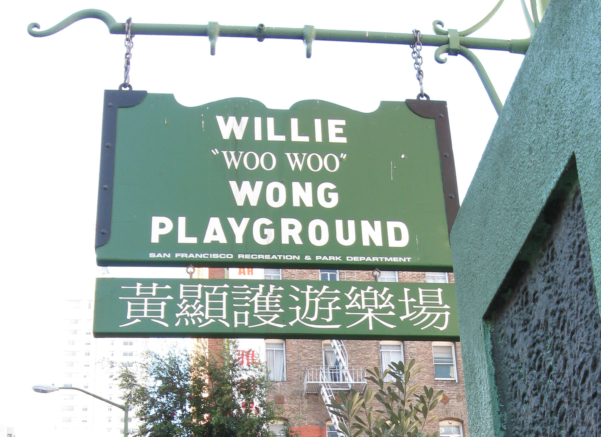

Tuesday, December the 1st, 2009
back to: title, date or indexes
Dear Mr Key, writes Vlasto Signalstrength, I read Hooting Yard mostly to keep up to speed with the doings of the Woohoohoodiwoo Woman, upon which you occasionally report. I wonder if you could tell me if she is in any way related to Willie “Woo Woo” Wong, after whom a San Francisco children's playground is named? My tiny daughter has grown fond of Willie “Woo Woo” Wong's swings, and is often to be heard screaming and gurgling with delight, noises which in an uncanny way remind me of the eldritch wailings of the Woohoohoodiwoo Woman as she skips and trudges around in the dark dark woods on moonlit nights. What can it all mean?
